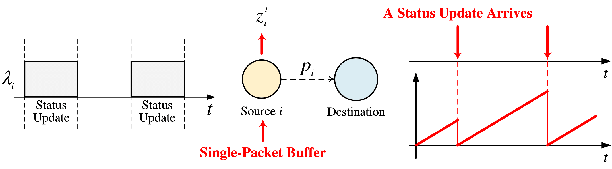
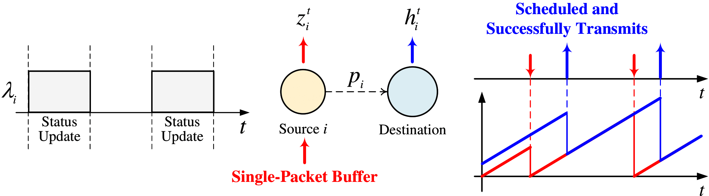
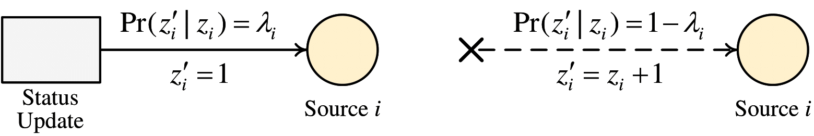
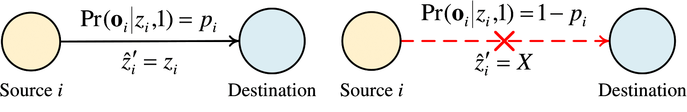

Optimizing AoI under Partial System InformationThis page lists papers on optimizing age of information in wireless networks under partial system information. Last updated on November 12, 2024. Feel free to contact me if you have any queries. BackgroundInformation freshness has become an increasingly important performance metric in this era of the Internet of Things. The concept of the age of information (AoI) has been proposed to measure information freshness from a destination’s perspective. This metric is defined as the time elapsed from the moment when the freshest received status update (by a destination) arrived at its source. In multi-user uplink systems, the scheduling problems of minimizing the network-wide AoI are challenging, especially in the presence of stochastic status update arrivals. This is mainly because destinations may not know if new status updates have arrived at sources. Most previous work assumed that sources utilized extra feedback to report their status update arrivals. Such feedback may lead to considerable overhead, thereby complicating the implementation of scheduling policies.   To address this limitation, we assume that there is no extra feedback, which results in a scheduling problem under partial system information. A partially observable Markov decision process can be further formulated to characterize the behavior of such a system. Specifically, a destination fully observes the destination AoI of sources and partially observes their source age.   Papers2020
2021
2022
2023
2024
2025
|